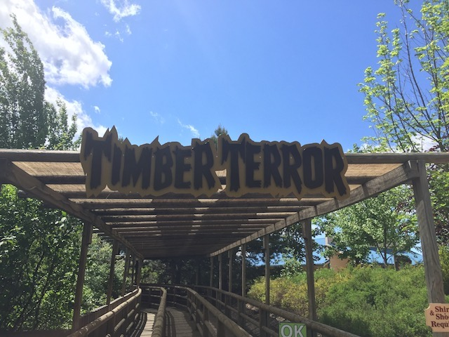

| |
Timber Terror Review

We're here at Silverwood and todays ride we'll be reviewing is Timber Terror. This is parks out and back wooden coaster and the smaller of the two woodies that they have. OK. So this must be the lesser wooden coaster. This must be the duller one while its bigger brother, Tremors, gets all the glory. Right? Well, it's true that Tremors definetly is the more popular wooden coaster. But honestly, I prefer Timber Terror. Yeah. It's just a small out and back wooden coaster. It kind of looks like a cruiser snoozer. OK. You should know that this is not a cruiser snoozer. But honestly, this goes BEYOND just not being a cruiser snoozer. I mean, this thing is a f*cking airtime machine! This thing has some seriously strong airtime! So let's quit talking and start riding. Get in, the buzz bars, come down, and we're off! All right. This ride uses buzz bars. This'll really ramp up the airtime. We go around a turn and start climbing up the lifthill. There's not much to look out at. Just the freeway and rural Idaho. That's all. Pretty dull, but we don't ride for the view. It's a roller coaster. Not an observation tower. We reach the top, head around a turn, and head down the first drop. It's not a super big first drop. But it does give us some good speed, and really gets us going. And then we fly over the first hill. It's not super big. But it's big enough for us to just soar right over, and out of our seats. Yes. The airtime has officially begun. And it's good. It's really good. We then rise up, get some airtime, only to rise up again. Ooh. A double up. I prefer double downs. But this is still really cool. We drop back down to the ground, getting some good headchoppers and more speed. We head up another hill and slam right into a left turn. Though it sort of works more as a helix than anything. Eventually, we head up another slight hill, go around a turn and drop back down to the ground. Oh, and in the back, EJECTOR AIR!!! Seriously, you will fly out of your seat right here. Oh, and more headchoppers. Always happy about that. Rise up into another airtime hill, and the airtime just lifts us out of our seats. SWEET!!! And then comes another airtime hill. Damn. This thing is practically an airtime buffet. Head up another hill, pop out of our seats, and into a downward helix. OK, the laterals aren't nearly as strong here as they were earlier, but it still works. And we still gain some speed here. Eventually, the helix spits us out and we rise up into the brake run. Aww. Seriously. This ride is really freaking good. So much airtime. And it's STRONG!!! Really strong. While not quite a Top 10 Wooden Coaster, it certainly goes above and beyond in providing a thrilling ride and deserves a much stronger reputation as the airtime machine it is in the coaster community. It's one of the most underrated coasters and one you should check out sometime soon.
8/10
Location: Silverwood
Opened: 1996
Built by: Custom Coasters International
Last Ridden: June 2, 2017
Timber Terror Photos


Home
|